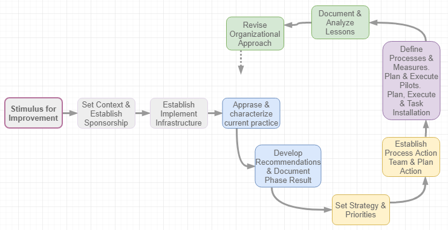
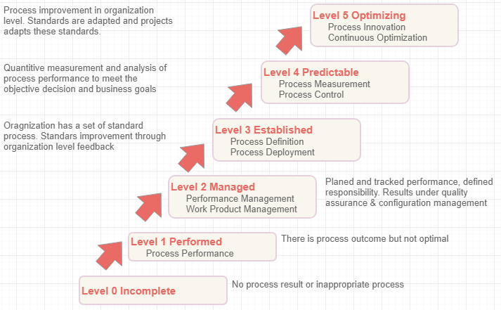
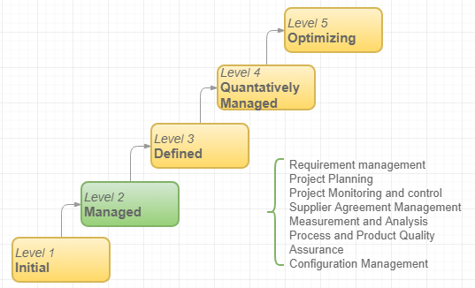
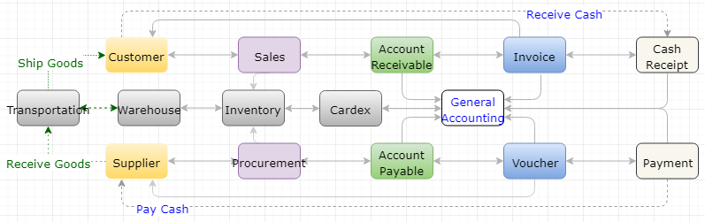
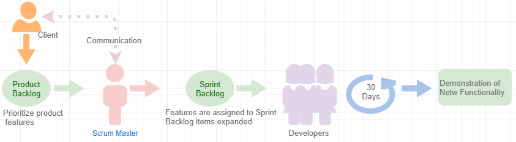
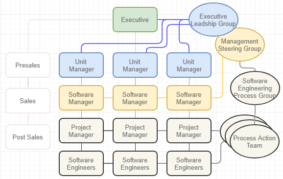
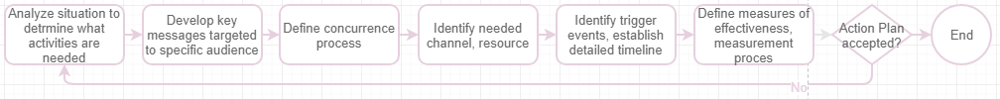
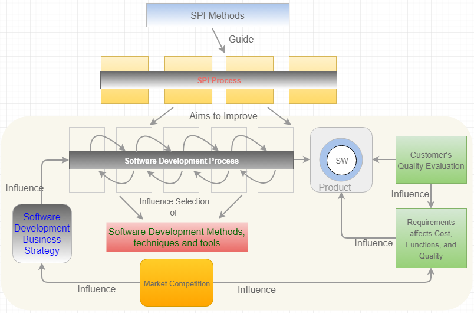
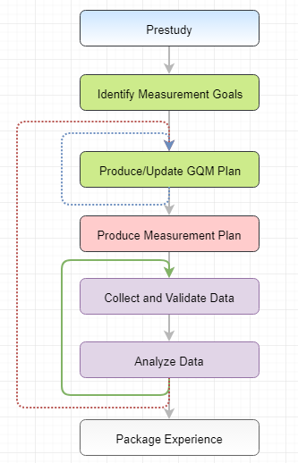
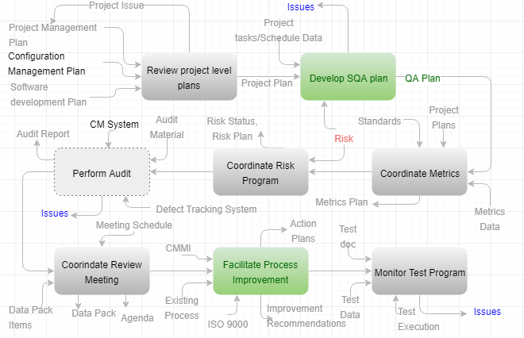

1.1
Purpose
This document is to seek for
the opportunity to build Software Process Improvement (SPI) plan document for PT
Matahari in developing a light Enterprise Resource Planning (ERP) software as
an enterprise solution to the market in Indonesia. This documents shall deal
with,
·
Process and Software Process
·
Industry accepted SPI methods
·
Software development best practice for SPI improvement
·
Measurement and assessment of SPI improvement
·
Software Quality Assurance in software development process
·
Risk management process improvement
1.2
Scope
This
document builds complete software process improvement plan for PT Matahari in
developing and maintaining a light ERP software. This software development process improvement document can be reused for similar projects in the future in
developing the enterprise solutions for small and medium organization.
1.3 Definitions, Acronyms, and Abbreviations
Table 1
describes acronyms, abbreviations, and
description used in this document.
Table 1. Acronyms & Abbreviations
|
Acronym |
Description |
|
E1 |
EnterpriseOne, Oracle owned
ERP software which directly competes with SAP in United States |
|
ELG |
Executive
Leadership Group |
|
ERP |
Enterprise
Resource Planning, which is backbone system for company with integrated
features |
|
FDD |
Feature-Driven
Development |
|
GQM |
Goal-Question-Metric,
or Goal-Question-Measurement |
|
IDEAL |
Initiating,
Diagnosing, Establishing, Acting, and Learning, software process model
developed by SEI in 1996 |
|
IEC |
International
Electrotechnical Commission, the international organizations for standardize
electrical, electronic |
|
IPO |
Input
Process Output for software engineering diagram |
|
ISO |
International
Organization for Standardization, an international standard-setting body
comprises representatives from different national standards organizations |
|
IT |
Information
Technology |
|
MRP |
Material
Resource Planning, the original of ERP software |
|
MSG |
Management
Steering Group, or steering committee to manage projects |
|
MVC |
Model,
View, Controller. Design pattern which segregates data, logic, and interface |
|
PATs |
Process
Action Teams |
|
QIP |
Quality
Improvement Paradigm |
|
RMP |
Risk
Mitigation Plan |
|
SCM |
Software
Configuration Management |
|
SEI |
Software
Engineering Institute, the Carnegie Mellon Software Engineering Institute
which is funded by federal government |
|
SEPG |
Software
Engineering Process Group, an organization,
focusing on software process improvement activities |
|
SLDC |
Software
Development Life Cycle, the life-cycle of software development which
encompasses planning, analysis, design, implementation, and maintenance |
|
SPI |
Software
Process Improvement, the framework to improve software process |
|
SPICE |
Software
Process Improvement and Capability Determination
alternatively names ISO/IEC
15504 |
|
QA/QC |
Quality
Assurance/Quality Control in engineering process |
|
SQA |
Software
Quality Assurance, monitoring the software engineering process and methods |
|
SQC |
Software
Quality Control. Cf., QC (Quality Control in Assembly line) |
Note: this table
is to be updated when plan gets moving on.
1.4 Overview
PT
Matahari is a small consulting firm focusing on Enterprise
Resource Planning (ERP) software consulting
with 100 employees in various cities in Indonesia. The organization
comprises mainly three areas
management, business analyst, and developers.
This
project seeks for the opportunity to improve the
software process in developing light ERP software through reviewing existing
process models, practices, Software Process Improvement (SPI) frameworks, and
building the organization specific SPI model/framework for effective
development and maintenance of light ERP software.
2.1 Software Process improvement (SPI) Methods
SPI is essential to improve the
quality of software, where the software improvement can be accomplished using SPI
methods. SPI is a framework to identify potential problems and
inefficiencies in Software Development Life Cycle (SLDC) to implement and to devise
possible solutions through proper analysis and improvement of software
development process.
Some of
well perceived methods are Six Sigma, IDEAL model, Software Process Improvement
and Capability Determination (SPICE) model, Capability Maturity Model (CMM),
International Organization for Standardization (ISO) model, and lastly Sprint
in Agile Software Life Cycle.
2.1.1
IDEAL Model
As a federal funded research and development center,
the Software Engineering Institute (SEI) develops IDEAL model in1996 for
software process improvement, which is named by the initial of five phases - Initiating,
Diagnosing, Establishing, Acting, and Learning phases. Figure 1 depicts five
phases in detail (McFeeley, 1996).

Figure 1. The IDEAL Model
·
Initiating phase: as the initial steps, which
establish the infrastructure of Software Process Improvement (SPI) including
high level SPI plan, its schedule, major functional elements high level SPI
plan, its schedule, major functional elements through the management steering
group (MSG), software engineering process group (SEPG), and other
organizational entity;
· Diagnosing
phase: this phase links the continuous software process improvement path;
· Establishing
phase: the management team develops/updates a SPI strategic action plan;
· Acting
phase: this phase implements the developed improvement and puts into practice
in the organization; and
·
Learning/Leveraging phase: prepare for next diagnosing
phase along with tuning opportunity.
The advantage of IDEAL model is various disciplines
which suits for long-term improvement strategy. As figure 1 reads this method
is a continuous improvement model (Anees, 2017). IDEAL model supplements
the process improvement plan in the long run. So this process model will be
adapted in implementing a hybrid approach between maturity approach and agile
approach for PT Matahari to develop software process improvement plan.
2.1.2 SPICE Model
The
International Organization for Standardization (ISO) and the International
Electrotechnical Commission (IEC) introduced the working title named SPICE
(Software Process Improvement and Capability Determination) or ISO/IEC 15504 in
1993. The SPICE model comprises the process dimension and the capability
dimension where the process dimension includes customers-suppliers (CUS),
Engineering (ENG), Project (PRO), Supports (SUP), and Organizations (ORG)
(HM&S, n.d.). On the other hand, the capability dimension is depicted in figure 2.

Figure 2. The Capacity Dimension in SPICE
Model
The
advantage of SPICE Model is that the organization can focus on a specific
process for the area of development rather than the models works iteratively. SPICE
model has enhanced the rigidity of maturity model however the capacity model of
this model does not suit for PT Matahari as a small organization where teams are segregated by functions.
2.1.3 CMMI Staged Maturity Model
The
Capability Maturity Model (CMM) is developed in 1991 by Carnegie Mellon Software
Engineering Institute (SEI) to help the organization improve the process in
developing software. This model attempts to integrate the rich asset of
capability models based on the notion of process maturity, which evolves to an
integrated capability model (CMMI). So CMMI supersedes CMM framework and
integrates it with other capacity maturity model to overcome weakness of CMM.
Some literature categorizes it into the staged CMMI model and the continuous
CMMI model. The latter does not classify the organization per discrete levels, unlike earlier CMM model. Figure 3 depicts the
process area defined in the managed level in the staged CMMI model
(Sommerville, 2016).

Figure 3. The CMMI Staged Maturity Model
The
disadvantage of the staged CMMI model is that each maturity level has its own
goals and practices and assumed all these goals need completing before moving
on to next phase. The overcome this advantage, the continuous CMMI model is
available. CMMI process model is to be discarded for actual implementation of
process model because PT Matahari is too new and small organization to
implement this.
2.1.4 Sprint Change Method as Software Process Improvement
Agile
determines documentation does not help to improve the development process
supposing that the requirements continuously changing supposing that the
process improvement is resulted from work improvement. In this context, the main
goal of Agile model is to able you to reach there step by step, or repeating
the iterative nature of software development incremental shape as depicted in
figure 4.

Figure 4. Sprints in Agile Methods
Supposing
that change must be adaptive, Agile methods are the natural choice for change
project. Study shows that a CMMI maturity level is significant improvement
which takes roughly takes two years where
this time frame naturally induces changes including new products, new
competitors, and restructuring of organization (Foegen et al., 2009).
2.2
Agile Approach for Software
Process Improvement
There
are two distinctive approaches to meet the goal of software development process
improvement. One is the maturity approach, which focuses on process improvement
and project management by introducing good software engineering practice to an
organization with goals of improving product quality and the predictability of
process. Generally, the process maturity approach is based on plan-driven development which increases overhead, as
result, activities do not translate into programming activities. Another is the
Agile approach, which emphasizes the
overhead reduction in software development life cycle (SLDC) with
characteristics of rapid delivery of functionality and responsiveness to the
change of requirements. Agile approaches focus on the code to develop by
minimizing formality and documentation (Sommerville, 2016).
PT
Matahari is a small organization in developing a light ERP software where a
light ERP has the architecture style is a layered style with its pattern
Model, View, and Controller (MVC) to develop various features in composite
design pattern. Since ERP comprises multiple modules which repeats its pattern,
I believe Agile approach for the software process improvement is well suited.
Through
Agile approach, PT Matahari can (Foegen et al.,
2009),
·
Identify
and resolve issues as early as possible;
·
Learn
how the process improvements work and how difficulties be tackled;
·
Adapt
to change business needs;
·
Respond
to feedback and lessons learned; and
·
Adopt
the vision and goals from CMMI.
The
adhesion of a single approach may cause the project failure. It is important to adopt the vision, goals and
status quo from maturity approach to produce quality product on time without
exceeding budget even the Agile approach is proved to be most cost effective
for small project for PT Matahari and IDEAL suits as framework of process
improvement. The reason for this argument is that the Agile approach may lack
of the improvement in the life cycle independent process improvement which
encompasses management (project management, quality management, and risk
management), support (documentation, configuration management, quality
assurance, and problem resolution), and customer-supplier (customer need
management and customer support).
3.1 Problem Identification
Functional areas segregate the teams in PT Matahari, which is based
on the ERP suites as depicted in figure 5. Each team has five business analyst and ten developers where units includes Material
Resource Planning (MRP), Shop Floor, Sales, Procurement, Account Receivable,
Account Payable, General Ledger, Human Resource & Payroll, and other minor
suites.

Figure 5. Current PT
Matahari Organization
This organization structure gives
room for different approaches in software development process depending on the
expertise of software managers. As result, current approaches which do not have
common practices agreed upon have issues,
·
Integrations
between suites are difficult;
· Development is rather ad-hoc basis;
and
·
Hard to maintain.
The advancement of IT
infrastructure in the region gives the opportunities for PT Matahari to move
forward from the traditional software development methodology. Figure 6 depicts
the design process model waterfall for
software develoment lifecycle.

Figure 6. Waterfall
Process Model
In this model, the requirements are
precisely known in advance which huge amount of documentation, which will not
change much during development.
However,
the waterfall process model has some known disadvantages which sometimes affect
the project success to meet the budget and time limitation. This rigid process
model has disadvantages,
· Difficult
to change in the steps and requirements;
·
Lacking of clients involvement; and
· Delayed testing.
3.2 Effective Solution Identification
The benchmark and reverse
engineering approach reveal that current commercial ERP software can be characterized with the Layered Style using
Model-View-Controller (MVC) pattern, where package is the combination of
features with the composite design pattern. And each features are tightly
integrated as depicted in Figure 7.

Figure 7. ERP Integration
To implement a light ERP with above
software architecture in mind, here review the process models: Reverse
Engineering for software reuse, Scrum and Feature-Driven Development (FDD) as
agile approaches to overcome the disadvantage described in waterfall process
model.
3.2.1
Reverse Engineering
Reverse engineering is a procedural
effort of understanding, duplicating an existing software Oracles JD Edwards EnterpriseOne
(E1), or components without using diagramming, modeling, or documentation
through analysis of existing system (Singhal & Gandhi, 2014). It is hard to
build the whole source codes for the enterprise solutions from scratch when
time and budget are limited. Hence, reverse engineering is viable option for
the project to build a light ERP software which is
slimmed down version of E1 based on the expertise of business analysts
and developers to build quality software without compromising its functionality.
This approach aims
to enhance the proven and existing enterprise solution by simplifying existing
package through reverse engineering tool. This tool encompasses software
maintenance, re-use, re-engineering, evolution, and testing.
·
Advantage:
easier or minimum documentation, quicker design of system structure, and naturally
faster implementation.
·
Disadvantage:
highly depending on the existing system E1 which can be practical limit for
evolution because this approach may take disadvantage of current product.
3.2.2
Feature-Driven Development
Feature-Driven Development (FDD) is
another incremental and iterative development model in Agile approach to
accomplish comprehensive software using five phases depicted in (TatvaSoft,
2015). The five phases comprises developing model, building a feature list,
planning by feature, designing by feature, and building by feature.

Figure 8. Feature-Driven
Development
The reason for choosing this
development model is that the ERP software is built based on the collection of
comprehensive features to record and manipulate daily transactions without fail
even it is a light one. The nature of ERP lies in its composite pattern using
composite (can have other object underneath) and leaf (very last object in a
tree) which has iterative and incremental nature by itself.
3.2.3
Scrum
The Scrum
development methodology can be applied to almost any project when the
requirements changes rapidly (TatvaSoft, 2015). In Scrum, the person who brings
the software to life is the product owner who is responsible for the software
through its life cycle. This scrum approach deals with vision, value, and
validation in the hierarchy which starts from company vision, business
strategy, production vision, product strategy, release plan, sprint plan, and
daily plan in top down approach.
One of
essential component of Scrum is Sprint. The Sprint is a time-box of a month to complete runnable product. Each Sprint
can be considered as a small project
which is a small program in the ERP suite. In this approach, the Sprint is a
kind of the feedback loop to the product owner who creates the program.

Figure 9. Linear View of
Scrum Methodology
Scrum
framework depends on pillars transparency (regarding
visibility), inspection (on Scrum artifacts and progress toward a Sprint Goal),
and adaptation reads (including Sprint planning, Daily Scrum, Sprint Review,
and Sprint Retrospective) as the Scrum Guide reads. As depicted in figure 9, basic
elements of Scrum approaches are (McGreal
& Jocham, 2018),
· Scrum Role:
Product Owner, Development Team, and Scrum Master;
· Scrum
Artifacts: the Product backlog, the Sprint backlog, and the Increment; and
· Scrum
Events: the Sprint, the Sprint Planning, the Daily Scrum, the Sprint Review,
and the Sprint Retrospective.
The light ERP software of PT Matahari to develop is a
series of iteration. For instance, sales order entry comprises various
validation on customer and item. And the validation of item extends to item
price, cost and so forth. Hence, this development model suits for building
software with huge number of components/iterations.
3.3 Solution Justification
As reviewed earlier, current
development process Waterfall development process is not suitable for
comprehensive software development. Hence, three development process with focus
on software process improvement are,
·
Reverse
Engineering: predictive process model spends huge amount of time for the
requirements elicitation, analysis and its documentation for both requirements
and design. Through reverse engineering approach, which abolishes the
requirements by reviewing the existing commercial ERP software Oracles JD
Edwards EnterpriseOne to extract business requirements.
· Feature-Driven Development: the
origin of this methodology is to deal with bigger team in combining whole
software engineers in PT Matahari since ERP is integration of multiple suites
with limited time 1.5 ~ 2 years time frame. This incremental and iterative
nature improve software process by following five phases described
earlier.
·
Scrum: with minimized documentation and putting more effort
on coding itself based on the analysis made through reverse engineering.
This approach is essential to shorter sprint to generate usable software in
time.
All three approaches are essential
to build a light ERP software successfully and accomplish the software process
improvement.
3.4 Solution Implementation and Communication Plan
The software process improvement
plan is ongoing project by choosing right process models which are most
suitable for PT Matahari. IDEAL and three process models for strategic level
and tactical level are chosen for the
success of project.
3.4.1
Solution Implementation
The organization need evolving as
depicted in figure 10 which is evolved
form based on figure 5.

Figure 10. Revised
Organization for SPI
In this figure, the practice
suggested by IDEAL model got applied to accomplish the software process
improvement which is align with software development models in building a light
ERP software for PT Matahari. In this steps, PT Matahari builds the infrastructure
for successful software process improvement as below (Layman, 2005),
·
Executive
Leadership Group (ELG) & Management Steering Group (MSG): Since PT Matahari
is a small organization which combines ELG and MSG for sponsoring SPI plan
including approval, budgeting. This team is accountable for the success of SPI.
· Software Engineering Process Group
(SEPG): comprises senior software engineers, analyst, architects, and
developers to decide on development
approaches.
·
Process
Action Teams (PATs): this team undertakes some process development or
improvement task based on hands-on development experience.
3.4.2
Communication Plan
The purpose of communication plan
is to make sure that ongoing software process improvement plan is relevant,
accurate, and consistent to project stakeholders and other audiences to gain
support and cooperation from each stakeholders as well.
Commonly, the development of
communication action plan comprises the processes as depicted in figure 11
(MITRE, n.d.).

Figure 11. Communication
Action Plan
3.4.2.1 Communication Objective
Open and effective communication including
both top-down and down-top to meet,
·
Promote
and gain effective support for the software process improvement plan
· Take initiative of process
improvement to implement best practice
· Give accurate and timely update of
project
·
Deliver
a consistent message
3.4.2.2 Audiences
Table 2 represents the target
audiences for the effective communication based on the organization depicted in
figure 9.
Table
2. Communication
Purpose per Target Audiences
|
Audience |
Communication
Purpose |
|
Executive & Executive
Leadership Group (ELG) |
Project plans, progress, and
approval |
|
Unit Manager & Management
Steering Group (MSG) |
Project strategy, direction,
project deliverables, and changes |
|
Project manager and Software
Engineering Process Group (SEPG) |
Project strategy, policies,
deliverables, Impact Analysis, and progress |
|
Business Analyst, Developer &
Process Action Team (PATs) |
Impact analysis, detail
design/test plan, and execute the process |
3.4.2.3 Communication Approach
Table 3 describes possible
communication approach based on audience and purpose defined in table 2.
Table
3. Communication
Approach
|
Audience |
Message |
Distribution
Method |
Frequency
of Distribution |
Sender |
|
ELG |
Project Plan Status Reports |
Meeting |
Weekly |
Project Manager |
|
MSG |
Project Plan Status Reports |
Meeting |
Weekly |
Project Manager |
|
SEPG |
Status Report Project Briefing |
Meeting |
Biweekly |
Project Manager |
|
PATs |
Project Briefing |
Meeting |
Monthly |
Project Manager |
Effective and open communications
are vital elements for project success by visualizing the vision and direction
of the project.
The assumption made so far is that a good software process
results in a high quality software, nearly on time without exceeding its budet based
on SPI enviornment in figure 12.

Figure
12. SPI, Software Development, and
Software Quality
4.1
SPI Initiatives
The SPI initiatives comprises frameworks, practices, and its
tools used. Frameworks help the organization to prioritize its improvement and
to focus on the area where more attention is needed. Practices are performed and
planned software engineering practices during software development lifecycle
(SDLC). And tools help Software Process Improvement (SPI) project to utilize
requirements management, scripting for automation, and configuration management
(Islam& Unterkalmsteiner, 2009).
This posting reviews the methodology for metrics, metrics to use, challenge of
selected methodology, and its solution.
Table 4. SPI Framework and Measurement
Methodology
|
SPI Management |
Development Model |
Process Quality Appraisals
Standards |
Measurement Methodology |
|
IDEAL
with Agile approach |
Reverse
Engineering, Feature-Drive Development, and Scrum |
CMMI |
GQM |
Note: GQM is Goal/Question/Metric
Method which to be described further.
Table 4 is simplified view of Software Process Improvement project in
developing a light ERP software for PT Matahari. The objectives of these
metrics are to assess the project scope, to control the cost of development,
and to ensure project cost within budget respectively. Figure 13 depicts the
goal of SPI using Quality Improvement Paradigm (QIP) in the organization which
can be utilized for PT Matahari.

Figure
13. Corporate Goal and Project Goal
4.2
Metrics
The
metrics, the quantitative measurement of software quality, determine the
quality of software, which can be categorized
into size, productivity, rework, effort, schedule, and quality, which are
highly dependent on the capability maturity level of the development process
during the software development lifecycle (McAuley, 1993). There are various
measurement frameworks available where a measurement frameworks is a set of
related metrics including data collection mechanism, and data uses in software
(Mendonca et al., 1998).
Table 5 describes
metrics to measure software development activities to use for software process
improvement plan for PT Matahari.
Table 5. Measurement Detail
|
Metrics
Category |
Question |
Measurement |
|
Size Metrics |
Current size of the requirement status |
Total number of requirement completed vs.
planned |
|
|
Current size of design status |
Number of design completed vs. planned |
|
|
Current size of new and reused code |
Line of code completed vs. planned |
|
|
Current size of test size |
Number of test completed vs. planned |
|
|
Current size of documentation |
Number of pages completed vs. planned |
|
Cost & Resource Metrics |
Current cost by activity |
Number of Labour Hour spent vs. estimated |
|
|
|
Number of dollar spent vs. estimated |
|
|
Current budget status |
Number of labour hour spent vs. estimated |
|
|
|
Number of dollar spent vs. estimated |
|
Schedule Metrics |
Current Development Time |
Elapsed time vs. estimated time |
|
|
Current schedule status |
Number of milestones completed vs. number of milestones
planned/estimated |
|
Quality Metrics |
The Nature of defects |
Number of defects per severity |
|
|
The defect density |
Number of defect per metric size |
|
|
Quality of the defect detection process |
Number of pre-release defects vs. Total number
of defects (pre-release + post-release) |
|
|
Product reliability |
Number of defects vs. execution time |
The development project of light ERP software project
is to establish a baseline for the measurement of SPI for PT Matahari. Hence these metrics are to be analysed and
assessed throughout software development lifecycle.
4.3 Measurements Plan
This
section reviews overall measurement plan encompassing how to collect it and who
does the collecting it, how to analyse and evaluate it by reviewing the metrics
chosen above. Table 6 entails the definition of metrics and its measurement.
Table 6. Metrics Definition & Its
Measurement
|
Metric |
Definition |
Measurement |
|
Size |
Software size is the
indicative of the effort required against planned effort. |
Software Lines-of-Code
(SLOC), Function Point Size, and Feature Point Size |
|
Cost and Schedule |
US Department of Defence
(DoD) determines the schedule and cost are always contradictory. The aim is
to control the cost and schedule of software development effort. |
Schedule Measurement,
Milestone Measurement on Human resource, hardware resource, software
resource, and reusable resources. |
|
Quality |
Software Quality is to
ensure the quality of the software is right
based on both functional and non-functional requirements. |
Reliability, maintainability,
integrity, usability, performance, availability |
Note: Cost Metrics and Schedule Metrics are combined
here because these factors are tightly related and intertwined.
Table
7 gives the detail view of the source of data collection and collector for
chosen metrics. The main concern of light ERP software development is budget
and time factor by putting the focal point to the features in the system. It
can be good approach to assess the improvement through benchmark based on
similar software development project when applicable.
Table 7. Metrics Data Source &
Collector
|
Metrics |
Data Source |
Collector |
|
Size |
Software Development Project
Schedule including requirements, design, coding, and testing |
Project Manager |
|
Cost and Schedule |
Budgeting and weekly meeting |
Project Manager |
|
Quality |
Software development team,
testing records, engineering lab test, source codes, and code review result. |
Project Manager and
developers |
Analyzing
the collected measurement data is essential to generate the indicators for
improvement. In other words, indicators are
derived from the performed analysis on measurement data. Commonly, both
objective and subjective data analysis help management to analyze the improvement.
The objective data comprises staff hours, SLOC, function points, components,
test items, units codes, changes, or defects. And the subject data encompasses
level of problem difficulty, degree of new technology involved, stability of
requirements (Acqnotes, 2013).
The
evaluation of the effectiveness of the measurement is important through examining
the correlation between the goal attainment and measurement results as depicted
in figure 14. In this figure, both database in
core measurement process and experience data describe how the iteration of
plan, perform and evaluation works (Islam & Unterkalmsteiner, 2009).

Figure
14. Evaluation in Measurement Process
4.4
Data Collection Approach - The
Goal/Question/Metric Method (GQM)
The
GQM methodology or Goal-Question-Measure
approach which is built on Quality
Improvement Paradigm (QIP) aims to supply information required for changing,
guiding, and understanding the software process of a software development
project in the organization. This methodology represents both a top-down
approach and a bottom-up approach. The former is to define and collect
measurement, and the latter is to analyze
the data collected against stated measurement goals. GQM integrates the goal of
organization into measurement goals and
entails measurable attribute on step-by-step basis. Hence, GQM contributes to
identify the exact metrics needed based on measurement goal, not the software best practice (Komi-Sirvio,
2004). In this context, software measurement compasses the quality of software
as a product (product measures), process performed (process measures), and
resources used (resource measures). Figure 15 depicts a brief overview using
size metrics and quality metrics in building a light ERP software for PT
Matahari for the first time.

Figure
15. GQM as Data Collection
Methodology
4.5
Challenges in measurement data
collection and evaluation
The
complexity and uncertainty of implementing metrics program makes whole SPI
project skeptical. Especially, it is hard for PT Matahari to choose right
measurements since this organization does not have sufficient software
development experience. As table 8 represents, challenges vary depending on
metrics patterns including measurement itself, people, program, and its
implementation (Iversena & Kautzb, n.d.).
Table 8. Metrics Program Challenges
|
Category |
Challenge |
Resolution |
|
Measurement |
Aim too
big |
Start
small |
|
|
Low
conformance |
Use a
defined set rigorously |
|
|
Tedious
data collection and reporting |
Automate
it |
|
People |
Unmotivated
managers |
Motivate
managers |
|
|
Undefined
expectations |
Set
clear expectation |
|
|
Missing
communication loop |
Involve
all stakeholder |
|
|
Lack of
training |
Educate
and train people involved |
|
|
Overwhelming
mistrust |
Build
trust |
|
Program |
Lack of
available methodology |
Take
evolutionary approach Agile for instance |
|
|
Stick to
the original program |
Agile to
throwaway |
|
|
Missing
information |
Get
right information to the right people |
|
|
Overly
time consuming initiative |
Strive
for a small initial success |
|
Implementation |
Too much
effort without any outcome |
Add
value |
|
|
Alienation
of developers on the use of measurement information |
Empower
developers to use measurement information |
|
|
Missing
holistic view |
Take
holistic view of project |
|
|
Impatience
to have result |
Apprehension
of new adaptation takes time |
4.6
Solution to tackle challenges
Five factors in SPI project need considerting to to overcome
the hinderance in the measurement of SPI inititiave (Iversena & Kautzb, n.d.).
·
Knowledge: The improvement knowledge has to be aligned with
organization knowledge to make the goal realistic and visible;
·
Organization: project organization;
·
Design: Start from dettermining a simple goal;
·
Communication: Share objectives and collected data; and
·
Usage: use the data.
The
software development process gets more disciplined, motivated by the notion
that the quality of software is affected by the quality of the process where
the process is defined, agreed, followed, and enforced. Assessing the SPI
outcomes is as important as the implementation of SPI because the gain of its
initiative can be measured only through this activities. SPI improvement
project is a new paradigm for PT Matahari who acquires industry best practices
to fulfil SPI initiatives.
This section reviews
how Software Quality Assurance (SQA) process positively affects the improvement
of software development process, which resulted in the quality software. This
section covers what is SQA process, relationship with process improvement, and
its implementation. High level SQA can be
represented in figure 16, which justifies how SQA can contribute to the
improvement of software development process.

Figure
16. SQA & Process Improvement
Below
reviews how SQA helps PT Matahari build quality software by complying some SQA process
model available.
5.1 Software Quality Assurance Process
Figure 17 depicts a
simple view of the Software Quality Assurance (SQA) process using
input-process-output (IPO) diagram. This model comprises eight sub-processes comprising: 1. Review
project level plans; 2. Develop Quality Assurance (QA) plan; 3. Coordinate its
metrics; 4. Coordinate risk program; 5. Perform audits; 6. Coordinate review
meetings; 7. Facilitate process improvement; and 8. Monitor test program
(Drabick, 2000).

Figure
17. SQA Input-Process-Output Diagram
SQA assures that the function
of software quality including the standards, processes, and procedures are
appropriate for the project and are implemented
correctly. Here reviews the requirements development, product integration, and
validation in detail where CMMI identifies the process improvement processes
with requirements development, requirements management, technical solution,
product integration, verification, and validation (Fleming, n.d.).
5.1.1
SQA in Requirements
Development Process
Any software development
process starts from requirements elicitation, which encompass customer
requirements, product requirements, and product-component requirements. SQA
plays important role to determine the compliance of documented standards,
processes, and procedures. In building a light ERP software for PT Matahari,
the design methodologies - reverse engineering, feature-driven development, and
Scrum is used. In this process, the
elicitation and analysis of requirements are
based on existing commercial software, Oracles JD Edwards EnterpriseOne
(E1). In the phases of requirements during SDLC, the business analysts review
the functionality of exiting software and suggest the features may not be
useful for small and medium sized enterprises.
5.1.2
SQA in
Product Integration Process
The goal of ERP implementation
is for integration, which integrates the components to the higher program, in
the suites, or between suites. The transactional data of supply and demand
resulted in Material Resource Planning (MRP) and
sales order updates account receivable for instance. Hence, the integration is
one of core process in developing ERP software and integral part of integration
is bigger than sum of individual applications. In product integration of SQA
ensures that the product/package, as integrated functions correctly. Also, SQA
makes sure that documented standards, processes, and procedures are followed. Nonetheless, it is equally
important the role of Software Quality Control (SQC) to perform the System
Integration Test.
5.1.3
SQA in
Verification and Validation
Validation is the process to
check you have built a right product and verification is to determine the
product built is right. Both processes are more relevant to SQC realm, but this process is equally important in
building the enterprise solutions. Because the enterprise solution comprise
huge number of programs towards suites, hence the important of verification and
validation are paramount.
V-model
represents clear semantics even when V-model is not the choice of design
methodology in developing a light ERP. As depicted in figure 18, the top
represents validation where below validation processes show verification (Mehle,
2017).

Figure
18. V-Model for Validation and
Verification
In
verification process, SQA plays an important role to check SQC has documented
plan, procedures including to determine the effectiveness of verification
process. In validation process, even it is very much SQC domain, SQA validates
whether the test and feedback conforms the documented procedure and process.
These processes highly impacts the continuous improvement and measurement.
5.2 Process Improvement Identification through SQA
The change of
development processes results in some deficiencies which is the exposure of
unfavourable outcome. This section reviews deficiencies and its counter measure
to accomplish process improvement (Shang & Seddon, 2007). Since the project
for software development is a light ERP, table 9 represents sources of
deficiencies and its counter measure using SQA model.
Table 9. Deficiencies & Process
Improvement using SQA
|
Source
of Deficiencies |
SQA
processes & Counter-measure |
|
Configurability |
· Process enhancement: Seek for opportunity of rapid implementation · Assessment: it current one effective and optimal? · Change: change processes for process effectiveness |
|
Integrity |
· Process enhancement: with different suites and in a single suite · Assessment: does the software yield desired outcome? · Change: change processes for valid integration |
|
Streamlined processes |
· Process enhancement: opportunities in reducing redundant tasks · Assessment: verify the work load caused by process change? · Change: educate users for change made |
|
Multiple options |
· Process enhancement: opportunities to fit better on business requirements · Assessment: does software contains the minimum functionality without
disturbing current business? · Change: simplify the relationship between applications |
|
Standard processes |
· Process enhancement: opportunities for scaling the software · Assessment: quality of different suites · Change: reconcile when there is conflict |
|
Performance |
· Process enhancement: opportunities for better performance through refined
algorithm · Assessment: improvement based on various measurement · Change: implement effective algorithm |
Note: Deficiencies above are common features of ERP software.
5.3 SQA Implementation and Its Communication Plan
The process
improvements apply to the organization for continuous improvement, software
development project for baseline of process improvement, and software
development process for efficient development based on the assumption that the
process improvement and SQA models resulted in quality software.
As depicted in figure
17, SQA encompass all below sub-processes. Table 10 is written based on CMMI
process model which is self-explanatory in modelling how to communicate each
improvement (Drabick, 2000).
Table 10. Process Model of SQA &
Communication Plan
|
Process |
Sub-process |
Communication
Plan |
|
Review Project Plan |
Review project management plan, Review the
configuration management plan, and Review
software development plan |
These are components for high level SQA, which
is to be performed the organizational
level. This process is baseline for continuous improvement. |
|
Develop QA plan |
Develop QA plan introduction, Create
management section, Identify documentation requirements, identify standards,
Specify reviews and audits, Review CM interface, Review defect reporting,
Develop metrics strategy, Identify tools and techniques, Define supplier
control, Define record approach, Document SQA plan, and Review and approve
SQA plan |
Allocate most of SQA activities in this
process. SQA group creates cost and schedule estimates of project and
generate reports to share its plan. |
|
Coordinate Metrics |
Develop metrics strategy, Create metrics
database, Document metrics plan, Review metrics plan, Collect measurement
data, Compute metrics, Evaluate trends, Issue metrics report, and Update
metrics process and plans |
Project manager hold weekly meeting on the
metrics of Size, Cost & Schedule, and Quality and share the approaches
with stakeholders. |
|
Coordinate Risk Program |
Develop risk plan, Review risk plan, Evaluate
its plan, schedules for risk, Collect process and product risks, Establish
risk database, Perform risk assessment, Coordinate risk control, Coordinate
risk meetings, and Generate Issue risk reports |
Risk affects the success of project directly.
Project manager lists up possible risk caused by budget, cost, and resource
and share it with high level management for the success of process
improvement project. |
|
Perform Audits |
Review project plan, Develop audit plan,
Review audit plan, Establish audit database, Perform process audit, Perform
software audit, Perform physical configuration audit, Perform functional
configuration audit, and Upgrade audit process |
Encompassing all processes and sub-processes.
SQA group participate to determine the documented procedure, process and so
forth. The result of audit need reporting top management. |
|
Coordinate Review Meetings |
Verity peer review schedule, Develop review
template, Support peer review meetings, Track action items, Verify design
review schedule, Develop design review agenda template, Coordinate design
review data packs, Support design review meetings, Track design review action
items |
Project manager and senior developer
communicate peer review and design review based on the Sprint scheduled every
sprint cycle one month. |
|
Facilitate Process Improvement |
Review project plan, Identify process
improvement opportunities, Develop process improvement plan, Prepare for
assessment, Perform assessment, Process assessment result, Monitor action
plan and progress, and Update action
plans |
This process in PT Matahari is to build the
baseline for the continuous software development process improvement across
software development organization. Within development project, the project
manager set initiative and report current status to the top management
bi-yearly. |
|
Monitor Test Program |
Establish test metrics database, Collect test
metrics, Report test metrics, Review test documentation, Monitor test
execution, Plan test process improvement, Assess test process, and Develop
test assessment reports |
The design model, Scrum in PT Matahari shorten
the cycle of test and acquire frequent feedback from the users before moving
to the next Sprint. Project manager, business analysts, and senior developer
monthly based where developers and end-user feedback gets performed weekly. |
5.4 Justification
Above section has listed
a number of software development processes
during SDLC where the focal point of SQA include the requirements development
process, product integration, and verification/validation. In building a light
ERP software for PT Matahari, the focus
has to be made in both functional requirements and non-functional requirement
encompassing functionality, usability, reliability, performance, and
supportability (Fleming, n.d.).
Here reviews the
potential benefits of each processes in relation with SQA Requirements
development, product integration, and verification/validation in the context of
capacity maturity.
·
Requirements Development: auditing on the
requirements based on the exiting ERP software on non-functional requirements
can generate the conformance of the documented standards, processes, and
procedures. This process is directly linked
to the verification process. This process is extremely important PT Matahari in
slimming down commercial package JD Edwards EnterpriseOne.
·
Product Integration: Since the primary purpose
of a light ERP software is integration, collaboration, planning, and forecasting. The SQA process for product
integration plays crucial role in the process improvement. In any enterprise
solution, the assembly or package of multiple suites determine the success of
project. Through sub-processes reviewed in SQM implementation section resulted
in successful a light ERP software development
project.
·
Software Verification and Validation: This
process determines the conformance of software whether a right software is
building and the built software is right. This process enables useful feedback
loop with users and conform the quality aspects of software.
As
reviewed in this section, the Software Quality Assurance plays important role
for the software development process improvement in building quality software.
Risk is the potential
harm arises from current process or future event. Risk affects software quality
assurance activities which assumed quality software is the result of software
process improvement. Hence, proper risk management for PT Matahari is essential
for SPI improvement since it is correlated with software quality to build. Figure
19 depicts the information and communication flows in risk management process (NIST, 2012).

Figure
19. Risk Management Process
The
first component of risk management addresses how to frame risk context to
establish risk management strategy. The second component, risk assessment
addresses how to assess risk based on the risk management strategy established.
Based on the assessed risk, the third component determines how to respond to
risk including alternative course of action;
then the last component determines how the organization monitor risk
over time.
6.1 Risk Assessment
This section discusses
the importance of risk management and the key factors in risk assessment
process. The success of a software development heavily depends on the amount of
risk which corresponds to software development processes. Hence, it is
paramount to identify, assess, prioritize, and manage the risk including
understanding, mitigation plan because any risk may threaten the success of
whole project itself. The benefit of using risk management in software
development process are (Iversen et al.,
2004),
·
Focus on aspects of a problematic situation;
·
Emphasize potential cause of failure;
·
Build relationship between potential threats and
possible actions; and
·
Share the lesson learned with team
There are various risk
factors: structure of the organization, stability of requirements,
socio-cultural factors, similar organizational structure, security and privacy,
quality management, project size, project management, negative impact on
employer's moral, modularity, knowledge management, juridical framework,
interfaces in the project management, hidden costs, fluctuation, experience in
the domain, experience in offshoring/competences, dependency of the internal
knowledge, and architecture. This section reviews factors in a risk assessment
in the context of maturity in software process improvement (Zubrow et al., 1994).
Table 11. Key Factors for Risk Assessment
|
Process |
Risk
Assessment factors |
|
Requirements Management |
· Policy A guiding principle which is adopted by the organization or
project to make decision · Software plan including software development plan, software quality
assurance plan, software configuration management plan, software test plan,
risk management plan, and process improvement plan · Software work product: process description, procedures |
|
Software Project Planning |
· Commitment of all stakeholders · Event-Driven Review · Periodic Review · Policy · Software plan |
|
Software Configuration Management (SCM) |
· Audit an independent examination of a work software or set of software
to determine whether it complies with specification, standards, and
agreements · Configuration data for configuration management process · Documented procedure a written description of a course of action to
perform a given task · Policy · Software baseline A set of configuration components which is formally
reviewed and agreed upon |
Table 11 represents
factors associated with risk assessment questions on factors discovered during
software development process. In this table, the purpose of requirements
management is to establish a common understanding among stakeholders, which
leads to an agreement to cover both technical and nontechnical requirements. Software
project planning establishes reasonable plan for manage the project. And
software configuration management is to build and maintain the integrity of
software throughout SDLC.
6.2 Risks affect Process Improvement in SDLC
This section discusses
various risks which impact software process improvement initiatives in building
a light ERP software for PT Matahari. The goal of software development project
is to build software which can hold daily transactions based on a heavy
commercial ERP software. When compiling software development process
improvement, the risks fall into project risk, product risk, and business risk.
Table 12. Risks Impacts Process
|
Risks |
Detail |
|
Software Requirement Risks |
· Lack of analysis upon the requirements change · Lack of documentation · Poor definition · Ambiguity · Change · Invalid requirements |
|
Software Cost Risk |
· Missing estimation · Unrealistic schedule · Lack of testing · Lack of monitoring · Architectural complexity · Management, technology, and environment change |
|
Software Scheduling Risk |
· Inadequate budget · Requirement change · Human error · Lack of knowledge on tools and techniques · Insufficient skill set |
|
Software Quality Risk |
· Missing documentation · Inadequate budget · Unrealistic schedule · Lack of expertise · Lack of testing |
6.3 Process Deficiencies
This section discusses
risk resolution strategies within SPI team to address the processes
deficiencies (Iversen,
Mathiassen & Nielsen, 2004). Table
13 entails the SPI risks in the scope of application a light ERP software,
framework CMMI with Agile way, and Methodology Sprint development model.
Table 13. Managing and Developing SPI Risks
|
Scope |
Managing
SPI Risks |
Developing
Risk Approaches |
|
Application area |
Management of risks in SPI teams in PT
Matahari |
Develop risk management approaches for
specific contexts |
|
Framework |
Framework of risk area in SPI teams Framework of risk resolution strategies for
SPI teams |
Framework of different types of management
approaches |
|
Methodology |
Process to manage risks in SPI teams |
Process to develop risk approaches for
specific contexts |
Based on the risk
assessment against software development lifecycle, it is paramount to recognize
and identify both weaknesses and strengths in it. The assessment process
analyses PT Mataharis software development capabilities and compares them to
the industry standards. Any findings of assessment help to educate developers
by exposing any deficiencies in their processes and procedures in building
quality software a light ERP software (Zapparolli, 2008). Table 14 describes
the risk during software development phases. As marked in this table, there are
possible deficiencies in each processes throughout SDLC.
Table 14. Process Deficiencies in Software
Development Phases
|
SDLC
Phases |
Rework |
Maintenance
Problem |
Performance
Problem |
Cost
Overrun |
Schedule
Delay |
|
Planning |
|
|
|
X |
X |
|
Requirements |
X |
X |
X |
|
|
|
Design |
X |
X |
X |
|
|
|
Coding |
X |
X |
|
|
|
|
Testing |
X |
|
X |
X |
|
|
Deployment |
|
X |
|
|
|
Following section
reviews how to mitigate the risk identified in this section.
6.4 Implementation and Communication Plan
So far, risk in
processes are identified for PT Matahari.
It is time to implement its mitigation plan based the risk assessment made to
improve software process. Figure 20 depicts risk mitigation planning in overall
risk management process (AcqNotes, n.d.).

Figure
20. Risk Mitigation
Throughout the software
development project, it is vital to make sure the effective communication among
all stakeholders, managers, developers, and Quality Assurance team. Sharing
information and getting feedback on risk will greatly increase the probability
of project success. Risk management is extensive discipline, which can
mitigated through,
·
Be proactive about risk management
·
Use checklists, and assess based on baseline
accumulated
·
Prioritize risks based on the severity of
exposure
·
Frequent feedback with stakeholders
·
Decompose large risk into smaller, if any,
·
And proper communication on current and future
risk.
Assumption was made that the software must be tested in each iteration of development
phases for the quality assurance and potential risk in the developed software.
The main purpose of this activity is to verify whether the requirements met and
prevent/remove possible defects in it. This activity should be more or less
same whether it complies with the traditional waterfall model or the agile
methodology. Table 15
describe implementation of the risk assessed and its communication plan (Zapparolli,
2008).
Table 15. Implementation and Communication
Plan
|
Activities |
Detail |
Communication
Plan |
|
Testing and Reviews |
· To ensure the design correlates with requirements · The code correlates with the design · The software operates as the requirements |
Project manager, senior developer, and
developer through code review and peer review for each iteration |
|
Defect prevention /removal /containment |
· Prevent defect during planning, requirements specifications, design, and
coding phases · Proper training and experience · Verity the adequate technology is available · Conduct necessary tests and reviews · Have an appropriate software development management process in place · Defect removal/reduction: during coding and testing phases · Fault testing · Identify any correcting action to prevent future faults · Default containment: during deployment and maintenance phases · Identify and isolate the different
outcome from previous test |
Project manager, business analyst, and
developers through code review, test planning, and development management process documents |
|
Inspection |
· Throughout SDLC · Verify the appropriate use of coding standards |
Senior developer and developers through coding
standards document |
|
Formal Verification |
· During the design and coding phases · Determine the program works right |
Project manager, business analysis, and other
stakeholders to verify whether the requirements are implemented correctly |
|
Formal Validation |
· During deployment and maintenance phases · Determine the right software is built |
Project manager, end-users, business analyst
through formal meeting |
6.5 Solution Justification
This section discusses
how the risk assessment, its mitigation plan are beneficial to PT Matahari in
implementing software process improvement plan. To
fulfil continuous improvement in the software quality, it is imperative
to develop risk approaches throughout software development processes. Figure 21
depicts possible development risk approaches which can be used for software process improvement plan (Iversen et al., 2014). In this figure the risk approaches outcome is to be used next iteration of development in
organizational context using action research process.

Figure
21. Developing Risk Approaches
So
far, various approaches were reviewed
including the benefit of risk management, key risk assessments factors, how
risk management in software development contributes software process
improvement, how this approach help to mitigate its deficiencies. It is
important for PT Matahari to ensure the efforts for process improvement at the
organization level as suggested above because various framework and methodology
reviewed are relevant to the development of light ERP software by tackling
existing and potential tasks in this project.
Acqnotes,
(2018). Risk Mitigation Plan
Implementation. Retrieved August 7, 2018,
from http://acqnotes.com/acqnote/tasks/risk-mitigation-plan-implementation
Acqnotes,
(2013). Software Estimation, Measurement,
and Metrics. Retrieved July 24, 2018, from http://www.acqnotes.com/Attachments/Chapter%2013%20Software%20Estimation,%20Measurement,%20and%20Metrics%20-%20GSAM%20Version%203.0.pdf
Anees,
A. (2017). Software process improvement models and their comparison. International Journal of Advanced Research
in Computer Science, 8(5) Retrieved from
https://proxy.cecybrary.com/login?url=https://search-proquest-com.proxy.cecybrary.com/docview/1912631602?accountid=
Drabick,
R. (2000). A Process Model of Software
Quality Assurance/Software Quality Engineering. Retrieved July 30, 2018,
from http://asq.org/pub/sqp/past/vol2_issue4/drabick.html
Fleming,
I. (n.d.). SQA Definition. Software
Quality Assurance and Software Quality Control terms and definitions in the
context of a Software Process Improvement framework. Retrieved July 31,
2018, from http://www.sqa.net/
Foegen,
M., Solbach, M., & Raak, C. (2009). Agile
Process Method. Sprint Change Method. Retrieved July 10, 2018, from
https://resources.sei.cmu.edu/asset_files/Presentation/2009_017_001_22328.pdf
HM
& S. (n.d.). What is SPiCE 1-2-1?
Retrieved July 10, 2018, from
http://www.spice12drive.com/cms/en/about-spice-1-2-1.html
Islam, A. M. &
Unterkalmsteiner, M. (2009). Software
Process Improvement Measurement and Evaluation Framework (SPI-MEF). A
Framework for Evaluating the Outcome of SPI Initiative. Retrieved July 18,
2018, from http://www.diva-portal.se/smash/get/diva2:829772/FULLTEXT01.pdf
Iversena, J. H. & Kautzb, K.
(n.d.). The Challenge of Metrics
Implementation. Retrieved July 20, 2018, from
http://citeseerx.ist.psu.edu/viewdoc/download?doi=10.1.1.25.8813&rep=rep1&type=pdf
Iversen, J. H., Mathiassen, L.,
& Nielsen, P. A. (2004). MANAGING RISK IN SOFTWARE PROCESS IMPROVEMENT: AN
ACTION RESEARCH APPROACH. MIS Quarterly,
28(3), 395-433.
Komi-Sirvio, S. (2004). Development and Evaluation of Software
Process Improvement Methods. Retrieved July 20, 2018, from
https://www.vtt.fi/inf/pdf/publications/2004/P535.pdf
Layman,
B. (2005). Implementing an Organizational Software Process Improvement Program. Retrieved July 9, 2018, from
http://citeseerx.ist.psu.edu/viewdoc/download?doi=10.1.1.136.7255&rep=rep1&type=pdf
McAuley. A. B. (1993). Implementing
Metrics for Process Improvement.
Retrieved July 19, 2018, from
doras.dcu.ie/19001/1/Angela_McAuley_20130613134623.pdf
McFeeley,
B. (1996). IDEAL: A Users Guide for
Software Process Improvement. Retrieved July 6, 2018, from https://resources.sei.cmu.edu/asset_files/Handbook/1996_002_001_16433.pdf
McGreal, D., & Jocham, R.
(2018). The Professional Product Owner
Leveraging Scrum as a Competitive Advantage. Addison-Wesley Professional.
Retrieved ProQuest in CTU Library
Mehle, M. E. (2017). Particle Accelerators as Medical Devices.
Retrieved July 31, 2018, from
https://www.linkedin.com/pulse/particle-accelerators-medical-devices-marcos-e-mehle
Mendonca, M.G., Basili, V.R.,
Bhandari, I.S, and Dawson, J. (1998). An
approach to improving existing measurement frameworks. IBM Systems Journal,
vol. 37, Retrieved July 19, 2018, from
http://www.cs.umd.edu/~basili/publications/journals/J73.pdf
Mirea,
A. (2012). The IDEAL Model. Retrieved
July 10, 2018, from https://www.slideshare.net/AdrianMirea/the-ideal-model
MITRE.
(n.d.). System Engineering Guide. Effective
Communication and Influence. Retrieved July 16, 2018, from https://www.mitre.org/publications/systems-engineering-guide/enterprise-engineering/transformation-planning-and-organizational-change/effective-communication-and-influence
NIST,
(2012). Guide for Conducting Risk
Assessments. Retrieved August 5, 2018, from https://nvlpubs.nist.gov/nistpubs/Legacy/SP/nistspecialpublication800-30r1.pdf
Rose-Hulman.
(2005). Software Process Maturity
Questionnaire. Retrieved August 6, 2018, from https://www.rose-hulman.edu/class/cs/csse376/.../Assessment-Questionnaire.doc
Saiedian,
H. (2005). Software Process Improvement:
An Introduction. Retrieved July 5, 2018,
from https://people.eecs.ku.edu/~hossein/811/Papers/cmm.pdf
Shang,
S., & Seddon, P. B. (2007). Managing
process deficiencies with enterprise systems. Business Process Management
Journal, 13(3), 405-416.
doi:http://dx.doi.org.proxy.cecybrary.com/10.1108/14637150710752317
Sommerville,
I. (2016). Software engineering. Boston: Pearson.
Stephens, R. (2015). Beginning
software engineering.
Indianapolis, IN. Wrox, a Wiley Brand.
TatvaSoft. (2015). Top 12 Software Development Methodologies
& Its Advantages / Disadvantages. Retrieved July 16, 2018, from https://www.tatvasoft.com/blog/top-12-software-development-methodologies-and-its-advantages-disadvantages/
Zapparolli, M. A. (2008). Conducting a
software quality assessment (Order
No. 1455394). Available from ProQuest Dissertations & Theses Global.
(304365985). Retrieved from
https://proxy.cecybrary.com/login?url=https://search-proquest-com.proxy.cecybrary.com/docview/304365985?accountid=26967
Zubrow, D. Hayes, W. Siegel, J.
& Goldenson, D. (1994). Maturity
Questionnaire. Retrieved August 6, 2018, from https://resources.sei.cmu.edu/asset_files/SpecialReport/1994_003_001_16265.pdf